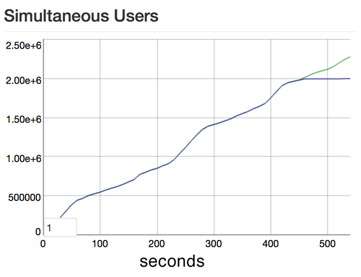
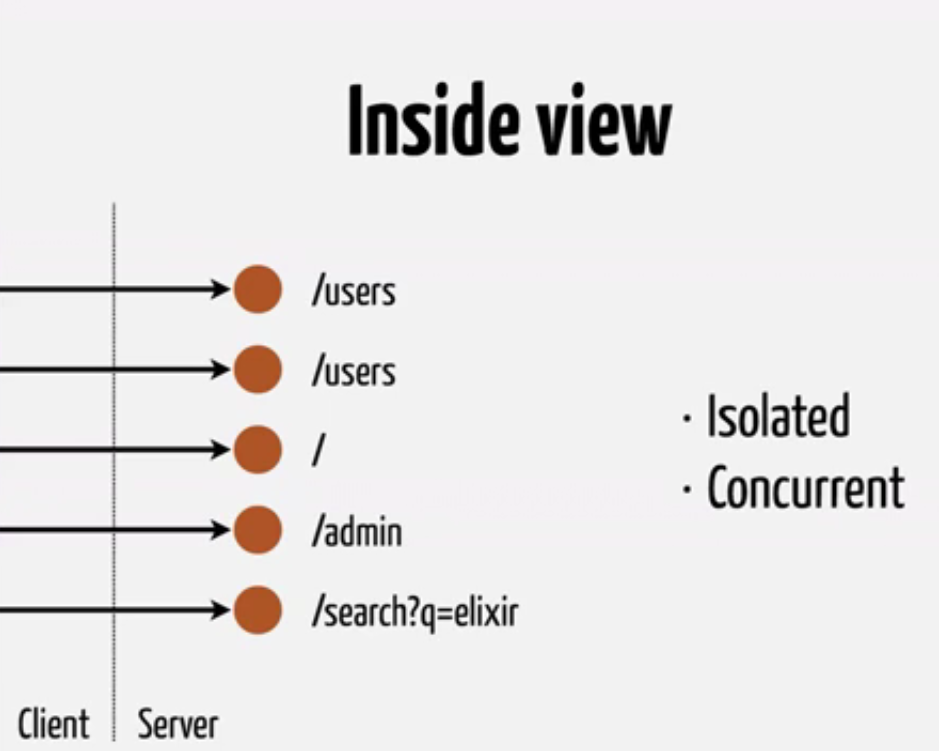

This was a brief introduction about how it came to existence.
With Elixir Phoenix we can be as much productive as we were with Rails best part is that the developed things are going to be multiple times efficient. Let’s see other benchmarks and features of Phoenix.
Phoenix guys started to benchmark the framework developed on a 128GB RAM and 40 cores.
And they were able to open 2 Million connections using 80 GB of RAM. CPUs were ideal as none of the data was flowing.
They broadcasted a Wikipedia article to 2 million connection and it took only 3 seconds.
Ref http://www.phoenixframework.org/blog/the-road-to-2-million-websocket-connections
Phoenix allocates a separate dedicated Erlang VM process for every http request and serves them concurrently.
Data for each request is isolated.
Garbage Collector is per process based.
Most of the time it is not required to Garbage collect as once the request is served the data is scraped, no GC is required and this also saves the CPU cycles.
Node, Ruby, Python have global GCs and when the servers starts getting heavy load the GC starts running very frequently that increases the response time of requests.